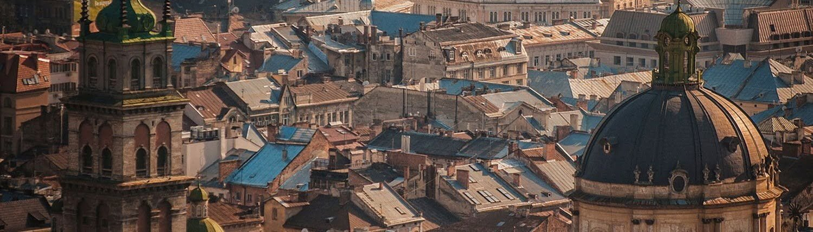

Львів

Географічне положення
Львів розміщений у центральній частині Львівської області між Яворівським, Жовківським та Пустомитівським районами, у східноєвропейському часовому поясі на 24 меридіані; місцевий час відстає від поясного на 24 хвилини. Площа міста в адміністративних межах 2012 року становить близько 182 км 2.
Музеї Львова
- Італійський дворик
- Пам'ятка ренесансної архітектури у Львові - Венеційський, він же Італійський дворик, зведений 1580 року. У дворику є що подивитися: це і кам’яний лев Лоренцович, створений наприкінці 16 століття, історичний дзвін “Ісайя”, надгробна плита з білого мармуру - хачкарі; ганебний стовп - прангер.
- Музей скла
- У першому та єдиному музеї скла в Україні можна побачити історичне скло - посуд, намисто, датовані 1- 2 століттям нашої ери, є келих, з яких пили заможні шляхтичі Західної України у 17- 19 століттях. На експозиції присутні й більш сучасні зразки 20 століття, виробленого у Львові та Стрию, які брали участь у Міжнародних симпозіумах.